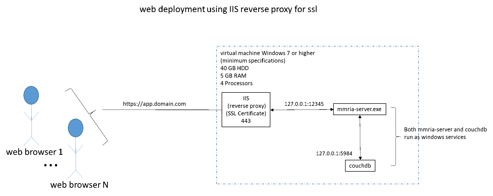

Click here for information about upgrading to MMRIA 18.01.23
Windows Backup and Restore in MMRIA 18.01.23
Table of contents:
- Preliminary Install Information
- Docker Install (recommended)
- Run MMRIA-DB Container
- Run MMRIA Application Container
- Configure DB
- Run Application _config
- Windows Install (alternate option)
- Install CouchDB 2.0
- Configure CouchDB 2.0
- Install MMRIA 18.01.23
- Configure MMRIA 18.01.23
- Offline Config of the MMRIA Database
- Backing up the MMRIA Database
Preliminary information
The MMRIA application can be deployed in numerous ways which are explained in detail on page 5 of the MMRIA User Guide .
The recommended installation of MMRIA is on a Docker platform, which will make maintenance and upgrades easier. Updates are expected to occur on a monthly to bi-monthly basis. The diagram below shows MMRIA installation with Docker.

Three key pieces of information need to be determined to complete this process:
- What database url will be used?
- What database admin user_name and password will be used?
- What application url will be used?
By default this setup guide assumes:
- The database url is http://localhost:5984
- The database administration url can be accessed by appending "/_utils" to the database url, i.e. http://localhost:5984/_utils
- You must decide the database admin_user_name and admin_user_password
- The application url is http://localhost:12345
During the setup process you will need to refer to this information frequently. This infomation will be needed to update CouchDB configuration parameters and 2 MMRIA configuration files.
The CouchDB 2.0 installation requries 3 sets of configurations.
- 1st set of configurations is done as soon as CouchDB 2.0 is installed and before the MMRIA 1.2.0 is setup.
- 2nd set of configurations is done after the MMRIA 18.01.23 is installed by running a "_config" utility from the MMRIA user interface.
- 3rd step of configuration and verification will need to be done to verify and ensure that all settings appropriately applied.
- On a Docker configuration changes take place immediately
- On a Windows installation CouchDB will need to be restarted to ensure that any configuration changes have been applied
For a Docker Install run the following command while supplying the appropriate Container Name + PORT + admin_user_name and passwor that you would like to use:
Docker Install of MMRIA Database 1.0.0
docker run -d --name [container name] -p [port]:5984 -e COUCHDB_USERNAME=[admin_user_name] -e COUCHDB_PASSWORD=[admin_user_password] thetagrid/mmria-db:v1.0 for example a container named mmria-database running on port 5984 with a user name of admin_name and password of my_password: docker run -d --name mmria-database -p 5984:5984 -e COUCHDB_USERNAME=admin_name -e COUCHDB_PASSWORD=my_password thetagrid/mmria-db:v1.0
Configure CouchDB 2.0
Navigate to the database url; the default location is http://localhost:5984/_utils
Setup + Configure Single Node: choose "Setup" then "Configure Single Node"
Specify Credentials Select your Admin Username and Password IP Bind address to listen on = 0.0.0.0 Port that the Node uses = 5984 Press "Configure Node" The application will respond with: "Apache CouchDB is configured for production usage! Do you want to replicate data?"
From the menu choose Verify + click "Verify Installation".
From the menu choose Configuration + CORS + Enable CORS + "All Domains".
Docker Install of MMRIA 18.01.23 Application Server
Run the following command, changing the container_name + port + database_url, admin_user_name and admin_password
docker run --name [container_name] -d --publish [Port]:9000 \ -e geocode_api_key="none" \ -e geocode_api_url="none" \ -e couchdb_url="[database_url]" \ -e web_site_url="http://*:9000" \ -e file_root_folder="/workspace/owin/psk/app" \ -e timer_user_name="[admin_user_name]" \ -e timer_password="[admin_user_password]" \ -e cron_schedule="0 */1 * * * ?" \ thetagrid/mmria:v18.01.23
You can now log in to MMRIA using the admin account and configure users and roles at http://localhost:12345. Please consult the MMRIA User Guide for instructions on configuring users and roles.
Windows or Non-Docker Install CouchDB 2.0
For a GNU/Linux install you should be able to use the appropriate package manager for your distribution. Contact mmria support for more detailed assistance.
Download and Run the following 3 install files:
- (Optional - you may already have it installed) Download .NET 4.7.1 install
- Download Apached CouchDB https://dl.bintray.com/apache/couchdb/win/2.1.0/apache-couchdb-2.1.0.msi
- Download and run MMRIA-Install-18.01.23 v(ee0c7a5).msi
Run the apache-couchdb-2.0.0.1.msi and accept the default settings it should install to the c:\CouchDB directory
After the install finishes open a browser and navigate to http://localhost:5984. You should see the following message to confirm correct installation:
{"couchdb":"Welcome","version":"2.0.0","vendor":{"name":"The Apache Software Foundation"}}
Windows Install MMRIA 18.01.23
After running MMRIA-Install-18.01.23 v(ee0c7a5).msi, a folder will be created at the following location: C:\Program Files (x86)\mmria\MMRIA 18.01.23
Configure MMRIA 18.01.23
Using "Run as Administrator," open Notepad or any text editor and verify that the 2 configuration files have the setting appropriate to your setup. These files can be found in the C:\Program Files (x86)\mmria\MMRIA 18.01.23 directory. .
mmria-server.exe.config
<add key="owin:AppStartup" value="mmria.server.Startup" />
<add key="geocode_api_key" value="" />
<add key="geocode_api_url" value="" />
<add key="is_environment_based" value="false" />
<add key="web_site_url" value="http://localhost:12345" /> <-- verify url is appropriate for your setup
<add key="file_root_folder" value="app" />
<add key="couchdb_url" value="http://localhost:5984" /> <-- verify url is appropriate for your setup
<add key="timer_user_name" value="couchdb_admin_user_name" /> <-- change to appropriate value
<add key="timer_password" value="couchdb_admin_password" /> <-- change to appropriate value
<add key="export_directory" value="c:/temp/mmria-export" />
<add key="cron_schedule" value="0 */1 * * * ?" />
mmria.exe.config
<add key="couchdb_url" value="http://localhost:5984" /> <-- verify url is appropriate for your setup
<add key="web_site_url" value="http://localhost:12345" /> <-- verify url is appropriate for your setup
<add key="import_directory" value="c:/temp/mmria-import" />
<add key="export_directory" value="c:/temp/mmria-export" />
<add key="is_offline_mode" value="false" />
Create two following directories for the following paths:
- c:\temp\mmria-export
- c:\temp\mmria-import
Restart Apache CouchDB and MMRIA 18.01.23 services
On Windows 7 Control Panel + System and Security + Administrative Tools + Services + "Apache CouchDB" + right click "Restart"
On Windows 7 Control Panel + System and Security + Administrative Tools + Services + "MMRIA 18.01.23" + right click "Restart"
After MMRIA 18.01.23 has been restarted wait about 2 minutes while the application initializes, then you will need to log into MMRIA using the couchdb user_admin_name and user_admin_password that was used to perform the setup.
Create at least one user who has the "abstractor" role. This is explained on page 52 of the MMRIA User Guide.
You may need to create one or more other users depending on the number and type of users in your jurisdiction. The two main types of users are "abstractor" and "committee_member".
Upon saving your changes, the user(s) that you created will be able to log in to the MMRIA application and use its features.
Setup is now complete.
MMRIA should now be configured and running. The main application can be accessed by using Chrome to navigate to http://localhost:12345 or the appropriate MMRIA url.
- Download the couchdb backup/restore bash script couchdb-backup.sh
-
You'll need to back up 2 databases:
- metadata (not underscore metadata "_metadata")
- mmrds
example usage backup ./couchdb-backup.sh -b -H [ip_or_url] -P [port] -d metadata -u [user_name] -p [user_password] -f mmria-metadata-db.json ./couchdb-backup.sh -b -H [ip_or_url] -P [port] -d mmrds -u [user_name] -p [user_password] -f mmria-mmrds-db.json restore ./couchdb-backup.sh -r -H [ip_or_url] -P [port] -d metadata -u [user_name] -p [user_password] -f mmria-metadata-db.json ./couchdb-backup.sh -r -H [ip_or_url] -P [port] -d mmrds -u [user_name] -p [user_password] -f mmria-mmrds-db.json